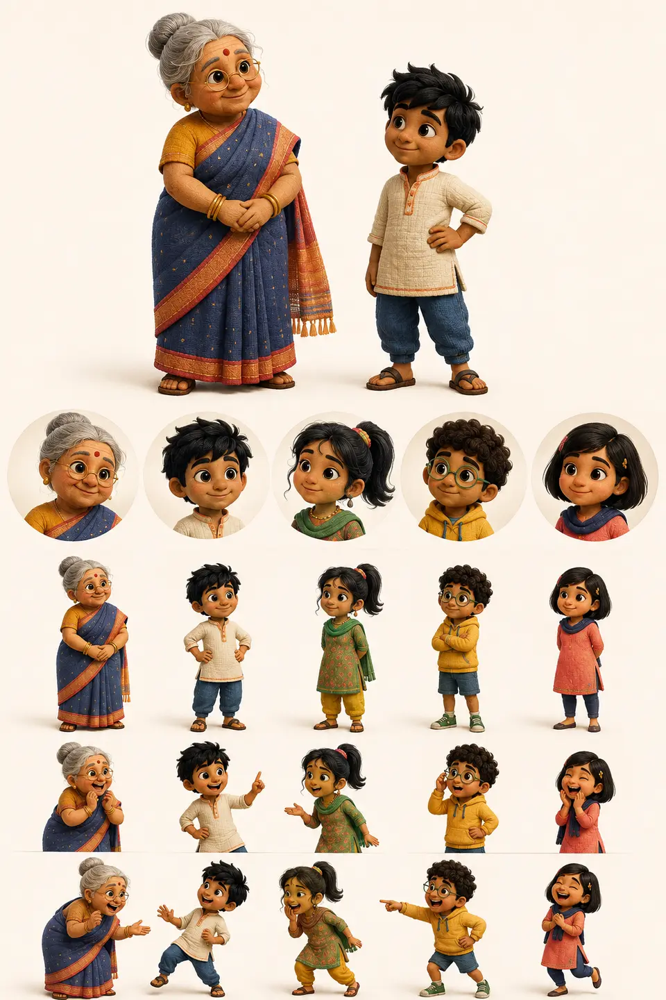

Option 1
Courtyard Clothfolk
Detailed soft-textile 3D. A tactile, affectionate family with finely woven surfaces and restrained seams confined to the characters.
StrengthMost distinctive handmade identity and strongest emotional warmth.
WatchTexture detail must simplify cleanly inside small HUD avatars.